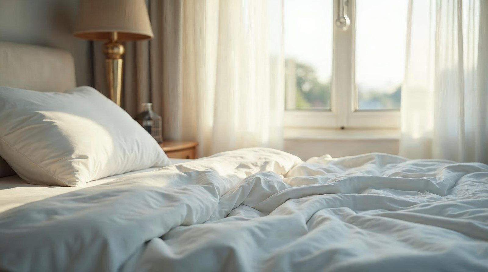
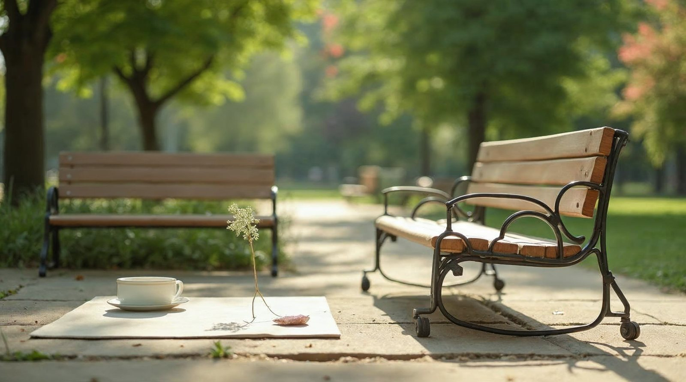
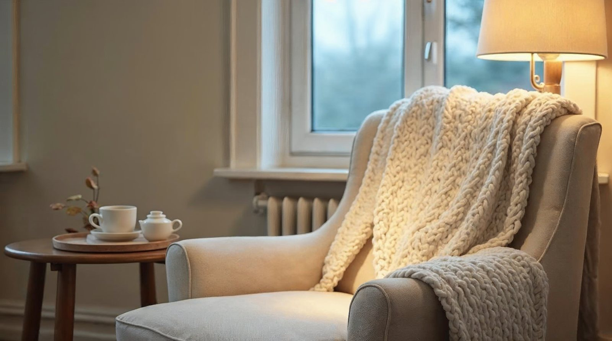
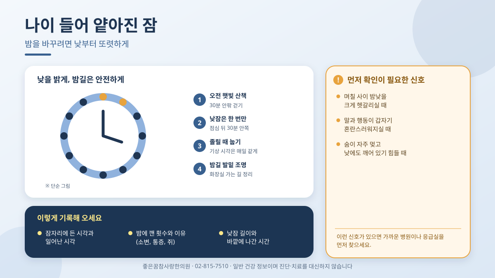

이종호 한의사 감수좋은꿈참사랑한의원 대표원장 (한의사 면허번호 19769)발행 2026-11-26 · 수정 2026-11-27
이 글의 차례
저녁 아홉 시만 되면 꾸벅꾸벅 졸음이 쏟아집니다. 일찍 누우니 잠은 금방 드는데, 새벽 두세 시면 눈이 번쩍 떠지죠. 화장실을 다녀오고 나면 다시 잠이 오지 않아 천장만 바라보다 날이 밝습니다. 낮에는 기운이 없어 소파에서 깜빡깜빡 졸다 보면 하루가 가고요.
어르신들께 잠 얘기를 여쭈면 많은 분이 "나이 들면 다 그렇지" 하고 웃으세요. 맞는 말씀이에요. 나이가 들면 잠의 모양이 달라지는 건 원래 그래요. 때가 돼서 찾아오는 자연스러운 변화라, 겁내실 일이 아니거든요.
그런데 그러니까 사실은 두 가지를 나눠서 보셔야 해요. '잠의 모양이 달라진 것'과 '밤이 괴로운 것'은 다른 얘기예요. 자연스러운 변화 위에 밤중 소변이나 통증, 드시는 약 같은 다른 이유가 겹치면, 밤이 길어지고 낮의 기운까지 무너지기 쉽거든요. 그 겹친 부분은 살펴 드릴 수 있어요.
부모님의 잠을 걱정하며 함께 오시는 자녀분들도 많아요. "밤마다 거실을 왔다 갔다 하세요", "낮에 계속 주무셔서 걱정이에요" 하고 말씀하시죠. 잠은 어르신의 기억력과 기분, 넘어짐과도 이어져 있어서 가족이 함께 살펴 드리면 큰 도움이 돼요.
이 글에서는 나이에 따라 잠이 어떻게 달라지는지, 그중 무엇이 자연스러운 변화이고 무엇을 더 살펴야 하는지, 생활에서 무엇을 바꿔 볼 수 있는지를 차례로 정리했습니다.

나이가 들면 잠은 어떻게 달라지나요?
잠에는 얕은 잠과 깊은 잠, 꿈을 꾸는 잠이 번갈아 찾아옵니다. 나이가 들면 이 가운데 깊은 잠이 줄고 얕은 잠이 늘어납니다. 그래서 작은 소리나 몸의 불편에도 쉽게 깨고, 자고 나도 푹 잤다는 느낌이 덜합니다.
잠의 시계도 앞으로 당겨집니다. 저녁이면 일찍 졸리고 새벽에 일찍 눈이 떠지는 것이 흔한 모습입니다. 여기에 밤중에 여러 번 깨는 일이 더해지면, 한 번에 길게 자는 잠이 몇 토막으로 나뉘게 됩니다.
이런 변화 자체는 나이 듦의 한 부분입니다. 낮에 활동하는 데 크게 지장이 없고, 졸음 때문에 일상이 흔들리지 않는다면 너무 걱정하지 않으셔도 됩니다. 다만 낮에도 늘 피곤하고, 기분과 기억이 함께 흐려진다면 그때는 잠을 다시 들여다볼 때입니다.
왜 어르신의 잠은 더 쉽게 깨질까요
첫째는 밤중 소변입니다. 나이가 들면 방광이 예민해지고 밤에 만들어지는 소변 양도 늘어납니다. 남성분은 전립선, 여성분은 방광 근육의 변화가 함께 영향을 줍니다. 한 번 화장실에 다녀오면 다시 잠들기 어려워 잠이 토막 나기 쉽습니다.
둘째는 몸의 통증입니다. 무릎, 허리, 어깨가 쑤시면 돌아누울 때마다 잠이 깹니다. 밤에 다리에 쥐가 나거나, 다리 속이 근질거려 가만히 있기 힘든 하지불안 증상도 잠을 자주 끊어 놓습니다.
셋째는 낮의 생활입니다. 바깥 활동이 줄고 햇빛을 덜 보면 몸의 시계가 흐려집니다. 낮에 소파에서 자주 졸면 밤에 필요한 졸음이 미리 쓰여 버립니다. 하루가 단조로울수록 낮과 밤의 경계가 흐려지는 것입니다.
넷째는 드시는 약입니다. 혈압약 가운데 소변을 늘리는 약을 저녁에 드시면 밤중 소변이 늘 수 있고, 일부 약은 잠을 얕게 하거나 반대로 낮 졸음을 부르기도 합니다. 그래서 진료실에서는 잠 이야기를 할 때 드시는 약을 꼭 함께 확인합니다.
다섯째는 마음입니다. 배우자를 먼저 보내셨거나, 혼자 지내시거나, 건강 걱정이 많으시면 밤에 생각이 많아집니다. 우울이 있으면 새벽에 일찍 깨서 마음이 무겁게 가라앉는 모습이 흔합니다. 잠 이야기 끝에 마음 이야기를 조심스럽게 여쭙는 이유입니다.
자연스러운 변화와 살펴야 할 불면은 어떻게 나눌까요?
자연스러운 변화는 잠이 조금 얕아지고 일찍 깨더라도 낮에 크게 힘들지 않은 경우입니다. 일찍 일어나 산책하고 하루를 잘 보내신다면, 잠의 시계가 당겨진 것일 뿐 문제가 되지 않습니다.
살펴야 할 불면은 밤에 깨어 있는 시간이 길고, 낮에 늘 졸리거나 기운이 없어 일상이 흔들리는 경우입니다. 잠을 못 잤다는 걱정 때문에 저녁부터 마음이 불안해지는 것도 불면이 자리를 잡았다는 신호입니다.
특히 살펴야 하는 경우가 있습니다. 코를 심하게 골다 숨이 멎는다는 말을 들었다면 수면무호흡을, 자면서 팔다리를 크게 휘두르거나 꿈속 행동을 따라 한다면 신경과 확인을, 기억력이 함께 눈에 띄게 떨어졌다면 인지 기능 검사를 먼저 생각합니다.
스스로 살펴볼 수 있는 점
아래 질문에 답해 보시면 어느 쪽에 가까운지 짐작하는 데 도움이 됩니다. 가족이 함께 답해 주셔도 좋습니다.
- 침대에 누워 있는 시간과 실제로 자는 시간이 크게 차이 나나요?
- 낮잠은 하루에 몇 번, 얼마나 주무시나요?
- 밤에 화장실 때문에 몇 번 깨시나요?
- 무릎이나 허리 통증, 다리 쥐 때문에 깨시나요?
- 코골이나 숨 멈춤을 가족이 들은 적이 있나요?
- 요즘 기분이 가라앉거나 기억이 흐려졌나요?
여러 개에 해당되더라도 걱정부터 하실 필요는 없습니다. 어느 부분이 잠을 흔드는지 알면 먼저 손볼 곳이 보이기 때문입니다.
어르신 잠에 대해 자주 헷갈리는 것
첫째, 나이가 들면 잠이 적게 필요하다는 생각입니다. 필요한 잠의 양이 크게 줄어드는 것은 아니고, 한 번에 깊게 자는 힘이 줄어드는 것에 가깝습니다. 그래서 밤잠이 토막 나면 낮에 졸음으로 메우려 하게 되고, 그 낮잠이 다시 밤잠을 얕게 만드는 고리가 생깁니다.
둘째, 오래 누워 있으면 그만큼 쉬는 것이라는 생각입니다. 저녁 일찍 누워 아침 늦게까지 이불 속에 계시면 잠은 오히려 더 얕고 흩어집니다. 침대에 머무는 시간을 실제로 자는 시간에 가깝게 줄이면 잠이 조금씩 단단해지는 경우가 많습니다.
셋째, 술 한 잔이나 따뜻한 정종이 잠을 부른다는 생각입니다. 처음에는 졸음이 오는 것 같지만 몇 시간 뒤 잠을 얕게 하고, 밤중 소변을 늘리며, 화장실 가는 길에 휘청이게 만들 수 있습니다. 잠을 위해 드시는 술이라면 줄여 보시길 권합니다.
넷째, 잠을 못 자는 것을 내색하면 가족에게 짐이 된다는 생각입니다. 어르신들은 불편을 참고 넘기시는 경우가 많습니다. 하지만 잠은 기억력, 기분, 넘어짐과 이어져 있어서, 일찍 이야기하실수록 가족도 함께 도울 방법을 찾기 쉬워집니다.
먼저 이렇게 여쭙니다
처음 오시면 저는 대략 이런 순서로 여쭙니다.
- 잠이 달라진 것은 언제부터인가요? 계기가 될 만한 일이 있었나요?
- 저녁 식사, 잠자리에 드는 시각, 일어나는 시각은 어떠신가요?
- 낮에는 주로 무엇을 하며 보내시나요? 바깥에 나가시는 날은 일주일에 며칠인가요?
- 저녁에 물이나 차, 커피를 얼마나 드시나요?
- 드시는 약은 무엇이고 언제 드시나요?
- 수면제나 수면 유도제를 드시고 계신가요?
수면제를 오래 드셨다면 처방한 선생님과 상의 없이 갑자기 끊지 않으시길 권합니다. 어르신은 수면제를 드신 뒤 밤에 화장실에 가다 휘청이기 쉬워, 밤중 이동을 안전하게 하는 방법도 함께 말씀드립니다.
일상에서 먼저 해 볼 수 있는 것
어르신 잠에서 가장 큰 힘을 발휘하는 것은 낮의 생활입니다. 밤을 바꾸려면 낮부터 바꿔야 합니다.
- 아침에 일어나면 커튼을 열고, 오전에 30분 안팎 햇빛 아래 걷기
- 낮잠은 점심 뒤 한 번, 30분 안쪽으로
- 저녁 소파 졸음은 일어나 가벼운 집안일로 깨우기
- 졸릴 때 눕고, 일어나는 시각은 매일 같게
- 저녁 식사 뒤 물과 차는 조금씩 줄이고, 자기 전 화장실 다녀오기
- 커피와 녹차는 오전에만
오전 햇빛은 몸의 시계를 맞추는 가장 쉬운 방법입니다. 동네 공원이나 경로당까지 걸어가는 길, 시장 다녀오는 길이 모두 좋은 산책이 됩니다. 걷기 어려우신 분은 창가에 의자를 두고 햇빛을 받으며 앉아 계시는 것도 도움이 됩니다.
일찍 졸리시는 분은 잠자리에 드는 시각을 조금씩 늦춰 보세요. 저녁 여덟 시에 누우시던 분이 아홉 시, 열 시로 늦추면 새벽에 깨는 시각도 따라 늦춰지는 경우가 많습니다. 저녁에 졸음이 올 때는 밝은 곳에서 가족과 이야기하거나 가볍게 움직이며 넘겨 보세요.
침대에 누워 오래 뒤척이시기보다, 20분쯤 지나도 잠이 오지 않으면 일어나 조명을 낮게 둔 거실에서 조용히 계시다가 졸릴 때 다시 누우시길 권합니다. 이때 밤길이 어둡지 않게 발밑 조명을 켜 두시면 넘어짐을 줄일 수 있습니다.

가족은 어떻게 도울 수 있을까요?
가족이 할 수 있는 가장 큰 도움은 낮의 동선을 만들어 드리는 것입니다. 오전 산책을 함께하거나, 복지관 프로그램이나 동네 모임을 알아봐 드리면 낮이 또렷해지고 밤잠이 깊어지는 데 도움이 됩니다.
밤의 안전도 함께 챙겨 주세요. 침실에서 화장실까지 가는 길에 발밑 조명을 두고, 문턱과 미끄러운 매트를 정리해 두시면 밤중에 일어나실 때 넘어질 걱정이 줄어듭니다. 침대 옆에 짚을 수 있는 손잡이나 단단한 의자를 두는 것도 좋습니다.
부모님이 드시는 약을 한번 정리해 보시는 것도 큰 도움이 됩니다. 여러 병원에서 받은 약을 한꺼번에 펼쳐 놓으면 비슷한 약이 겹쳐 있거나, 저녁에 드시는 약이 잠을 방해하고 있는 경우가 보이기도 합니다. 정리한 목록을 들고 처방한 병원과 상의해 보세요.
침실은 이렇게 살펴보세요
침실은 조금 서늘하고 어둡고 조용한 쪽이 잠에 좋습니다. 겨울에 전기장판을 높게 켜 두시면 몸이 너무 데워져 밤중에 깨기 쉬우니, 잠들 무렵에는 온도를 낮추거나 꺼지도록 맞춰 두세요. 이불은 무겁지 않고 따뜻한 것이 좋습니다.
텔레비전을 켜 둔 채 잠드시는 분이 많은데, 화면 빛과 소리가 얕은 잠을 자꾸 깨웁니다. 소리가 있어야 잠이 오신다면 라디오를 작게 틀고 꺼지는 시간을 맞춰 두시길 권합니다. 시계는 눈에 보이지 않는 곳에 두시면 밤중에 시각을 확인하며 걱정하는 일이 줄어듭니다.
한의원에서 함께 살필 수 있는 경우
- 잠이 얕고 꿈이 많아 자고 나도 개운하지 않은 경우
- 밤에 손발이 차거나 반대로 화끈거려 잠이 자주 깨는 경우
- 무릎, 허리, 어깨 통증 때문에 돌아누울 때마다 깨는 경우
- 밤에 다리가 저리거나 쥐가 자주 나는 경우
- 수면제는 줄여 가고 싶은데 낮의 리듬부터 다시 잡고 싶은 경우
좋은꿈참사랑한의원에 오시면 맥을 짚고 잠의 모양과 소화, 대소변, 손발의 온도를 함께 여쭙습니다. 통증이 있는 자리는 직접 만져 보며 확인합니다. 그 내용을 바탕으로 침, 통증 자리 관리, 온열 관리, 한약 상담 가운데 지금 상태에 맞는 것을 진찰한 뒤 정합니다.
어르신은 여러 약을 함께 드시는 경우가 많아, 한약을 상의할 때는 드시는 약을 모두 확인하고 더욱 신중하게 정합니다. 드시던 약은 처방한 선생님과 상의 없이 멈추지 않으시고, 한의원 진료는 그 흐름과 나란히 갑니다.

이렇게 기록해 오시면 상담이 쉬워집니다
잠은 기억보다 기록이 정확합니다. 2주 정도, 어르신이 적기 어려우시면 가족이 대신 적어 주셔도 됩니다.
- 잠자리에 든 시각, 일어난 시각
- 밤에 깬 횟수와 이유(화장실, 통증, 쥐, 생각)
- 낮잠 시각과 길이, 저녁 소파 졸음
- 바깥에 나간 시간과 걸은 정도
- 저녁에 드신 물, 차, 약
기록을 나란히 놓고 보면 바깥에 나간 날 밤잠이 깊고, 낮잠이 길었던 날 밤이 길어지는 흐름이 눈에 보이곤 합니다. 그 흐름이 어르신과 가족 모두에게 가장 설득력 있는 안내가 됩니다.
밤이 덜 길어지도록
나이가 들어 잠이 달라지는 건 자연스러운 일이에요. 그래도 밤이 괴로운 것까지 당연히 받아들이실 필요는 없어요. 요즘은 일흔, 여든도 아직 하실 게 많은 나이잖아요. 낮을 조금 더 밝고 또렷하게 보내는 것만으로도 밤의 모양이 달라질 수 있거든요.
잠을 깨우는 통증과 몸의 불편을 살피는 건 제가 맡을게요. 대신 하나만 부탁드려요. 이번 주에는 오전 햇빛 산책 하나만 시작해 보세요. 멀리, 빨리 걷지 않으셔도 돼요. 동네 한 바퀴를 천천히, 대신 매일이면 충분해요. 가족과 함께 걸으시면 더 좋고요.
딴 건 하시던 대로 편하게 지내셔도 됩니다. 다음에 오시면 2주 동안의 잠 기록부터 함께 펼쳐 볼게요. 궁금한 건 그냥 편하게 물어보세요.
이런 증상은 먼저 확인이 필요합니다
- 며칠 사이에 밤낮을 크게 헷갈리시거나 말과 행동이 갑자기 혼란스러워지신 경우
- 자다가 숨이 자주 멎는다는 말을 듣고 낮에도 깨어 있기 힘들 만큼 졸음이 심한 경우
이런 신호가 있으면 한의원보다 가까운 병원이나 응급실을 먼저 찾으세요.
함께 읽으면 좋은 글
- 새벽에 자꾸 잠이 깨는 이유는 무엇이고, 어떤 점을 살펴보나요?
- 자다가 소변 때문에 깨면 잠과 어떤 관련이 있고, 무엇을 살펴보나요?
- 겨울이 되어 바깥 활동이 줄어든 어르신이 밤잠이 짧아지고 새벽에 일찍 깰 때는 어떻게 살피나요?
- 저녁만 되면 다리 속이 벌레 기어가듯 근질거려 가만히 있기 힘든 하지불안 증후군은 어떻게 살피나요?
- 어르신이 말수가 줄고 외로움과 우울이 길어질 때, 가족은 무엇을 살피면 좋을까요?

여쭙는 것
- 잠이 달라진 것은 언제부터인가요? 계기가 될 만한 일이 있었나요?
- 저녁 식사, 잠자리에 드는 시각, 일어나는 시각은 어떠신가요?
- 낮에는 주로 무엇을 하며 보내시나요? 바깥에 나가시는 날은 일주일에 며칠인가요?
생활에서 해 볼 것
- 아침에 일어나면 커튼을 열고, 오전에 30분 안팎 햇빛 아래 걷기
- 낮잠은 점심 뒤 한 번, 30분 안쪽으로
- 저녁 소파 졸음은 일어나 가벼운 집안일로 깨우기
한의원에서 함께 살필 것
- 잠이 얕고 꿈이 많아 자고 나도 개운하지 않은 경우
- 밤에 손발이 차거나 반대로 화끈거려 잠이 자주 깨는 경우
- 무릎, 허리, 어깨 통증 때문에 돌아누울 때마다 깨는 경우
먼저 확인이 필요한 신호
- 며칠 사이에 밤낮을 크게 헷갈리시거나 말과 행동이 갑자기 혼란스러워지신 경우
- 자다가 숨이 자주 멎는다는 말을 듣고 낮에도 깨어 있기 힘들 만큼 졸음이 심한 경우
한눈에 보는 표
| 구분 | 핵심 |
|---|---|
| 여쭙는 것 | 잠이 달라진 것은 언제부터인가요? 계기가 될 만한 일이 있었나요? 저녁 식사, 잠자리에 드는 시각, 일어나는 시각은 어떠신가요? |
| 생활에서 해 볼 것 | 아침에 일어나면 커튼을 열고, 오전에 30분 안팎 햇빛 아래 걷기 낮잠은 점심 뒤 한 번, 30분 안쪽으로 |
| 한의원에서 함께 살필 것 | 잠이 얕고 꿈이 많아 자고 나도 개운하지 않은 경우 밤에 손발이 차거나 반대로 화끈거려 잠이 자주 깨는 경우 |
| 먼저 확인이 필요한 신호 | 며칠 사이에 밤낮을 크게 헷갈리시거나 말과 행동이 갑자기 혼란스러워지신 경우 자다가 숨이 자주 멎는다는 말을 듣고 낮에도 깨어 있기 힘들 만큼 졸음이 심한 경우 |
자주 묻는 질문
나이 들어 잠이 줄어드는 건 어쩔 수 없나요?
깊은 잠이 줄고 일찍 깨는 변화는 자연스러운 부분이 있습니다. 다만 낮의 생활과 밤중 소변, 통증, 약을 살피면 밤이 덜 길어질 수 있어 함께 들여다볼 만합니다.
낮잠을 아예 자지 말아야 하나요?
아예 끊기보다 점심 뒤 한 번, 30분 안쪽으로 줄여 보시길 권합니다. 저녁 소파에서 조는 습관이 밤잠에 더 큰 영향을 주는 경우가 많습니다.
수면제를 오래 먹었는데 한의원 진료를 받아도 되나요?
드시는 약을 알려 주시면 그에 맞춰 진료 방향을 정합니다. 수면제는 처방한 선생님과 상의 없이 갑자기 끊지 않으셔야 합니다.
부모님이 진료에 혼자 오셔도 되나요?
혼자 오셔도 됩니다. 다만 드시는 약 봉투와 잠 기록을 챙겨 오시면 좋고, 가족이 함께 오시면 밤의 모습을 더 자세히 들을 수 있어 도움이 됩니다.
좋은꿈참사랑한의원은 재진 때 지난번 이야기부터 이어서 여쭙니다. 진료시간과 예약은 오시는 길에서 확인하세요.
어디서 상담받을 수 있나요?
좋은꿈참사랑한의원은 서울 동작구 만양로2길 2 신성빌딩 3층·5층(서울 동작구 상도동, 7호선 상도역 3번 출구 근처)에 있습니다. 한의사 3명(이종호 대표원장, 조영기 수석진료원장, 정원영 진료원장)이 진료합니다. 진료시간은 평일 09:30~20:00(점심 13:00~14:00), 토·일·공휴일 09:30~15:00이며, 방문 전 전화로 확인을 권합니다. 예약은 네이버 예약, 카카오톡 상담, 전화 02-815-7510로 받습니다.
이 글은 일반적인 건강 정보이며 개인의 진단이나 치료를 대신하지 않습니다. 증상이 있거나 복용 중인 약이 있다면 진료를 통해 확인하세요. 치료 효과는 개인마다 다를 수 있습니다.
작성 기준: 일반적으로 알려져 있는 건강 정보를 참고해 정리했습니다(대표원장 감수). 증상 기록은 1~2주 동안 하루 1회, 비슷한 시간에 적어 오시면 지난 상태와 비교하기 쉽습니다.